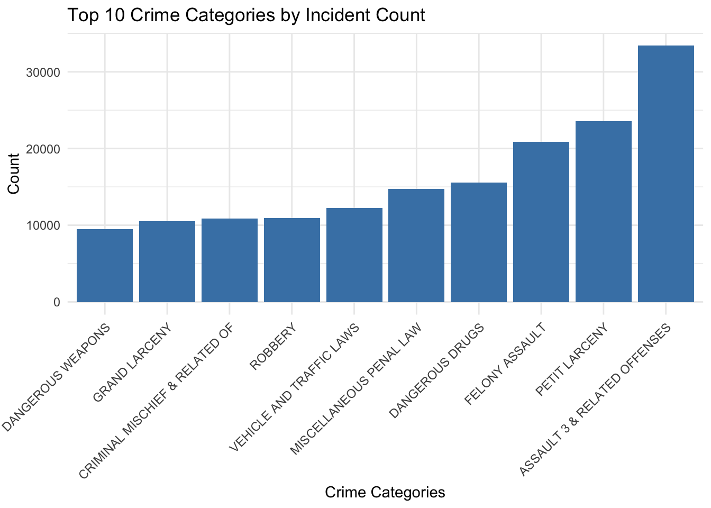
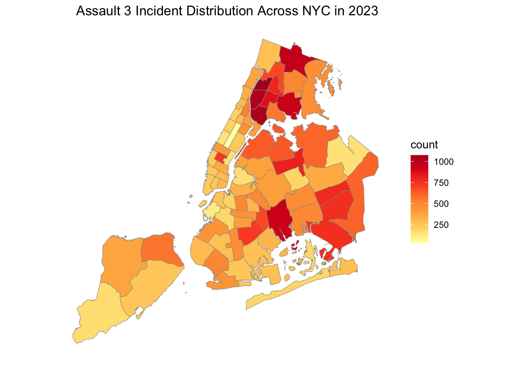
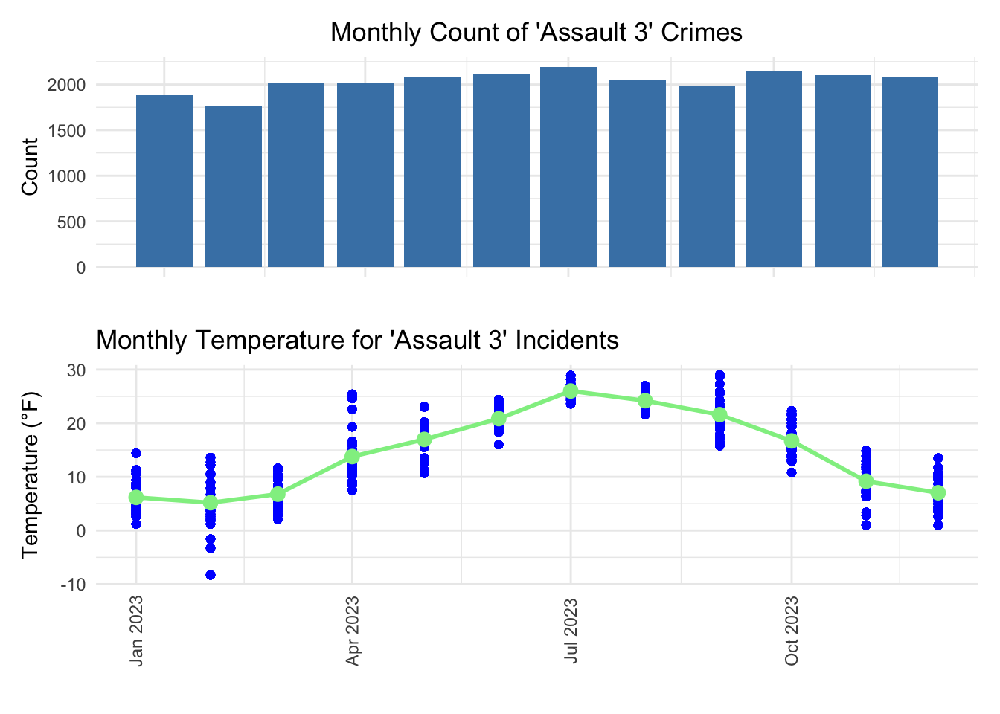
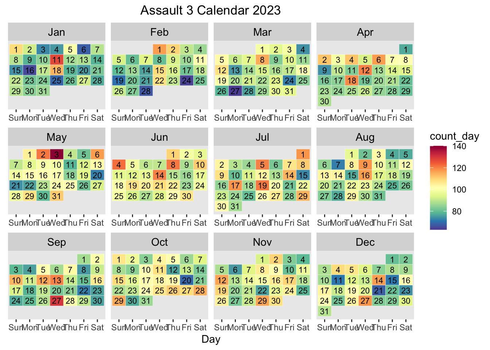

Big Picture
A 538/Upshot style article about the data.
This comes from the file big_picture.Rmd.
Think of this page as your 538/Upshot style article. This means that you should try to tell a story through the data and your analysis. Read articles from those sites and similar sites to get a feeling for what they are like. Try to write in the style of a news or popular article. Importantly, this pge should be geared towards the general public. You shouldn’t assume the reader understands how to interpret a linear regression. Focus on interpretation and visualizations.
Rubric: On this page
You will
- Title
- Your big picture page should have a creative/click-bait-y title/headline that provides a hint about your thesis.
- Clarity of Explanation
- You should have a clear thesis/goal for this page. What are you trying to show? Make sure that you explain your analysis in detail but don’t go into top much mathematics or statistics. The audience for this page is the general public (to the extent possible). Your thesis should be a statement, not a question.
- Each figure should be very polished and also not too complicated. There should be a clear interpretation of the figure so the figure has a clear purpose. Even something like a histogram can be difficult to interpret for non-experts.
- Creativity
- Do your best to make things interesting. Think of a story. Think of how each part of your analysis supports the previous part or provides a different perspective.
- This page should be self-contained.
Note: This page should have no code visible, i.e. use #| echo: FALSE.
Rubric: Other components
Interactive
You will also be required to make an interactive dashboard like this one.
Your Big Data page should include a link to an interactive dashboard. The dashboard should be created either using Shiny or FlexDashboard (or another tool with professor’s approval). This interactive component should in some way support your thesis from your big picture page. Good interactives often provide both high-level understanding of the data while allowing a user to investigate specific scenarios, observations, subgroups, etc.
- Quality and ease of use of the interactive components. Is it clear what can be explored using your interactive components? Does it enhance and reinforce your conclusions from the Big Picture? Plotly with default hover text will get no credit. Be creative!
Video Recording
Make a video recording (probably using Zoom) demonstrating your interactive components. You should provide a quick explanation of your data and demonstrate some of the conclusions from your EDA. This video should be no longer than 4 minutes. Include a link to your video (and password if needed) in your README.md file on your Github repository. You are not required to provide a link on the website. This can be presented by any subset of the team members.
Rest of the Site
Finally, here are important things to keep in mind for the rest of the site.
The main title of your page is informative. Each post has an author/description/informative title. All lab required posts are present. Each page (including the home page) has a nice featured image associated with it. Your about page is up to date and clean. You have removed the generic posts from the initial site template.
Why does analyzing NYC Arrest Data significant?
In a city as vast and dynamic as New York, understanding crime patterns is not only about statistics, but also about protecting neighborhoods and shaping policy. Analyzing crime rates reveals the underlying factors that affect the safety of New York and helps to unravel the complexities of city life. By looking at the numbers, as well as other information, we can get a clearer understanding of the actual impact of crime rates on the streets and the lived experiences of New York citizens.
Level 3 Assault has the highest number of incidents in all crimes
The bar graph tells us a fact: among the top ten crime categories by incident count of New York in 2023, one stands out—Assault 3. This category represents instances when individuals recklessly cause physical injury to another person; or with criminal negligence, the individual causes physical injury to another person by means of a deadly weapon or a dangerous instrument. In the densely social fabric of New York City’s society, where every block can tell a thousand stories, Assault 3 serves as an important indicator of public well-being. It’s the most common thread that requires our focused attention to understand and, more importantly, to address.
Thesis Statement:
The daily crime rates in New York City are significantly influenced by a combination of demographic factors — specifically age, gender, and race of individuals — and environmental conditions, including daily temperature fluctuations and weather patterns.
1. Crime on the Map: Uncovering the Regions of “Assault 3” Across New York
New York City has an intricate mix of neighborhoods, which causes crime rates in these areas differently. From the socio-economic environment to the density of the urban environment, a variety of factors unique to each area contribute to the difference of crime rates. Understanding the “why” behind these numbers is key to developing effective solutions tailored to crime prevention and community safety.
Analyzing the number of incidents of “Assault 3” in different areas of New York city

The map on the left is an indicator to show the exact names correlated to different regions. The map on the right shows the number of incidents occurring in different regions of New York city in 2023. In the right map, the most red color shows the number of “Assault 3” crimes is over 1000 and the least red color shows the number of “Assault 3” is from 0 to 200. The darker reds that mark the Bronx and Queens suggest a higher incidence of “Assault 3” crimes. This could be because of a higher density of people, not enough money, and less help and services for the community. Conversely, the light red observed in Manhattan and Staten Island could be indicative of a different set of socio-economic dynamics, possibly including higher income levels, more community resources, or more effective community policing strategies. However, these lightly colored areas on the map should not be misunderstood as a sign that there is no problem. The incidence of crimes is a citywide problem and areas with fewer incidents still need diligent community support to maintain safety. The graph also lays bare the fact that ‘Assault 3’ crimes are not randomly distributed; they are clustered in areas that may be struggling with systemic challenges that need to be addressed through focused and sustained effort.
2. Warmth and Warning: Unraveling the Ties Between New York’s Temperatures and its Tumult
In New York City, where the pace of life never slows down, there’s a hidden connection between the seasons and the city’s heartbeat. The temperature sways up and down, and with it, there’s a rise and fall in the number of Assault 3 crimes. It’s a pattern that reveals a silent force at work. The heat and the cold do more than just change the weather, they seem to stir up the actions of people too. This dance of crime rates with the thermometer shows us a reminder that the city’s rhythm is highly related with the temperatures.
Warmer temperature causes higher incidents of “Assault 3” crimes

The bar chart at the top displays the counts of Assault 3 crimes month by month, offering us a visual timeline of crime frequency throughout the year. Directly beneath it, the temperature graph provides a monthly overview of New York City’s climate. While at first glance, the correlation between temperature and crime incidents may not jump out, a closer examination of the peaks and troughs in crime rates alongside temperature variations suggests a potential seasonal trend.
#calendar

Conclusion
Through New York City arrest data, particularly for “Assault 3” offenses, we have gained important insights into the occurrence of crimes in the city, discovering how social climates, seasons, and temperatures are intertwined with public safety. This analysis goes beyond mere numbers and points the way to policy and prevention efforts. We observed how warmer months increased”:Assault 3” crime rates, suggesting that we need dynamic, seasonally sensitive strategies to keep neighborhoods safe. From the dense red patches of the Bronx and Queens, where there are more “Assault 3” attacks, to the lighter reds of Manhattan and Staten Island, crime scenes vary from borough to borough, underscoring the need for specific policies. These findings are a clarion call for targeted action, emphasizing that safety is a collective responsibility. By understanding the unique challenges and needs faced by each community, we can customize interventions that not only reduce “Assault 3” crimes, but also strengthen the fabric of New York city. This analysis is a critical step toward a future that New York could be a safer city for all people in all regions.